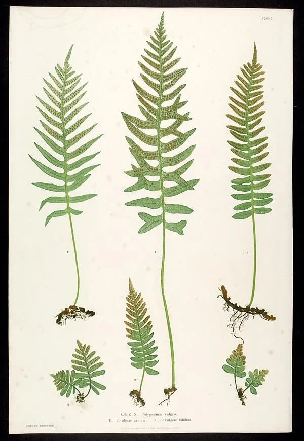
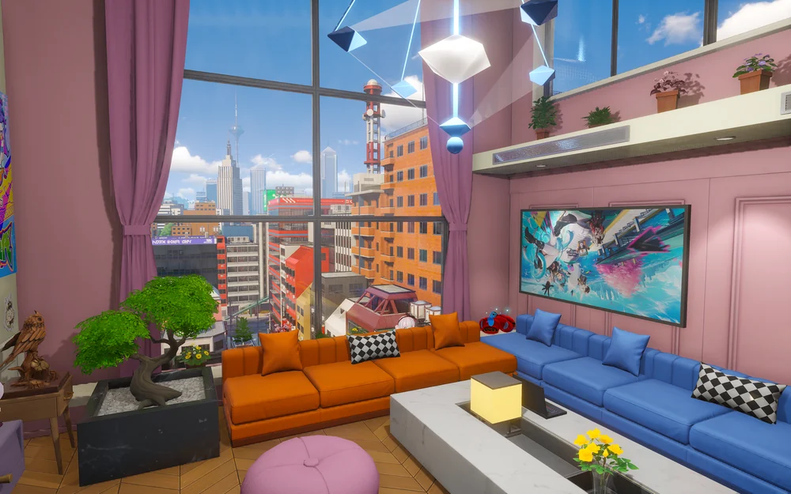

收藏间
一张老图版、房间里的三种颜色，还有散步时会留意的小路。

1857 · 植物图版
一页蕨叶
Polypodium vulgare
叶尖的形状很接近。放大看，每一枝的叶缘、斑点和根茎都不一样。
Biodiversity Heritage Library · 公有领域
图像与配色
把风景里好看的几种颜色挑出来，旁边留一张便签。


从房间里拾三种颜色
-
橘色沙发
#C86A31 -
窗边的蓝
#47679C -
淡粉墙面
#DBA39C

下次想试试
选同一个地方，截下晴天和雨天各一张。把两张图并排放，再写一句各自的声音。
读《把声音写下来》